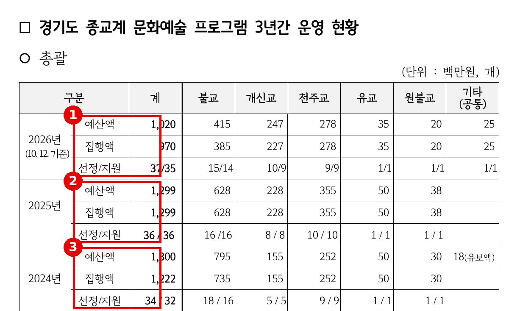
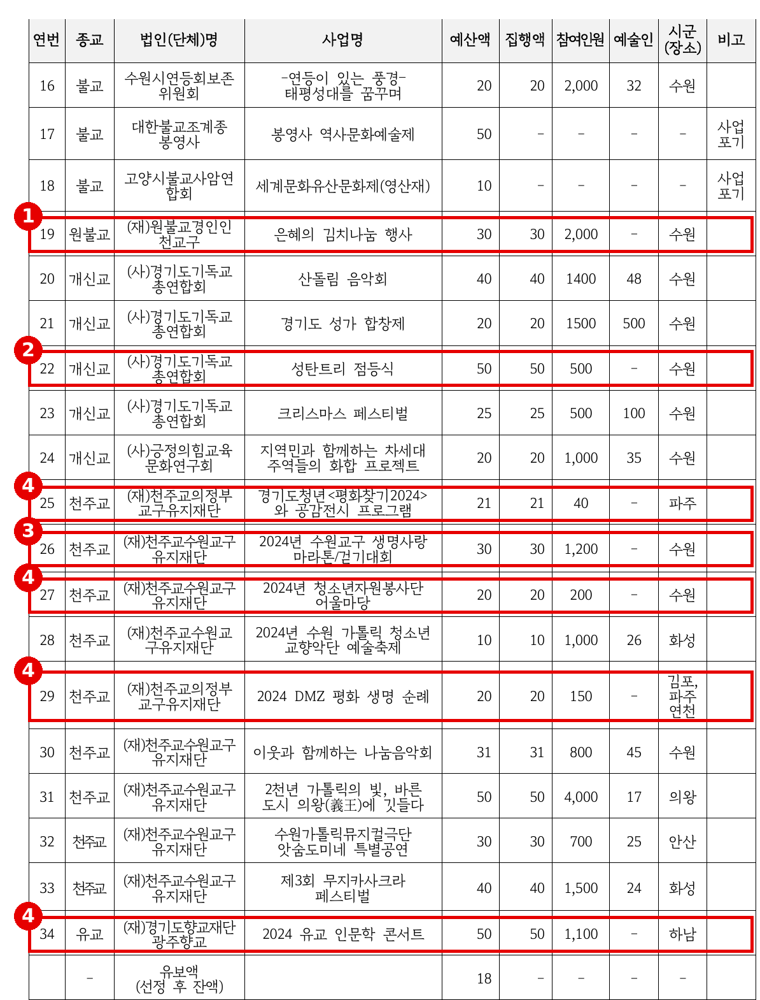
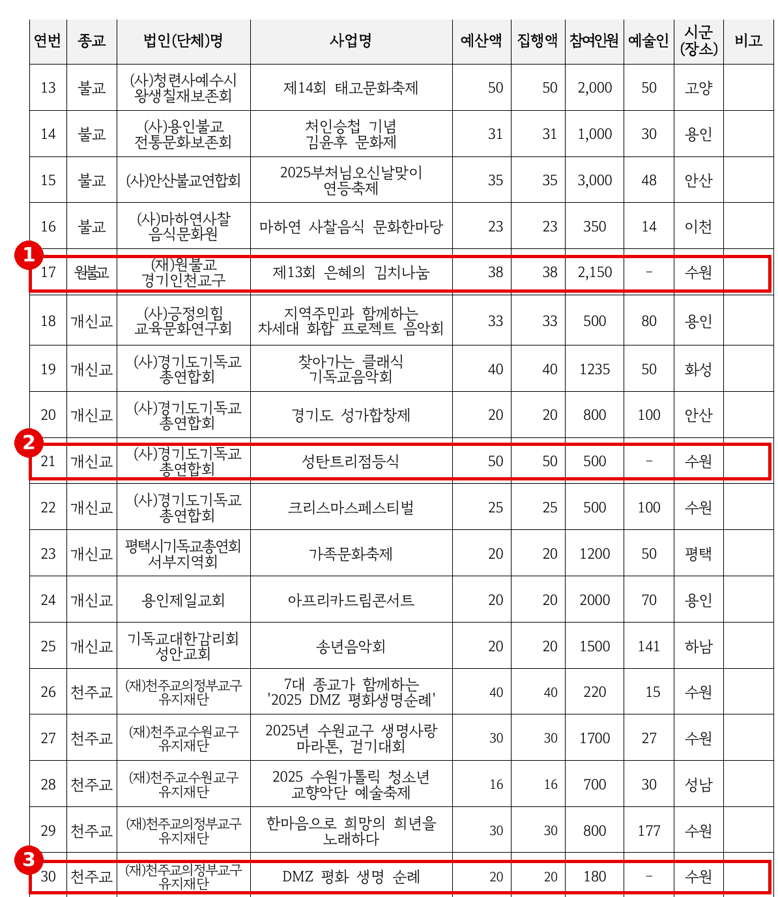
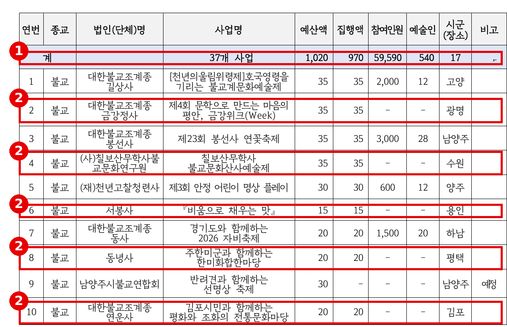
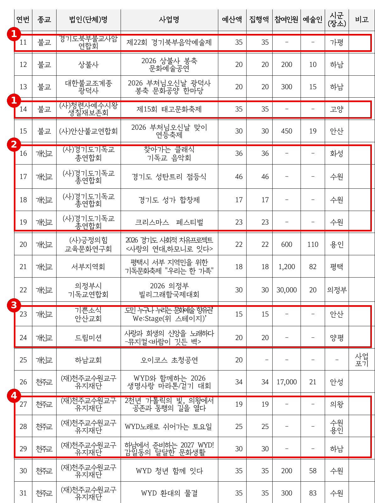
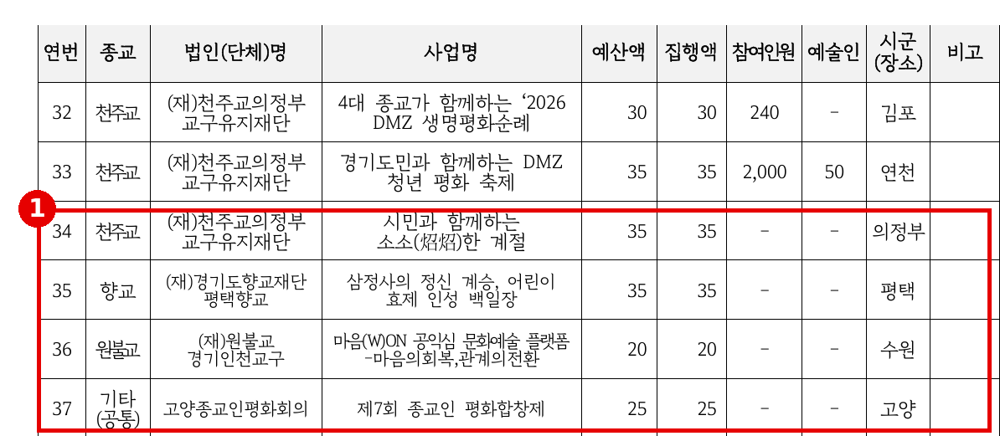
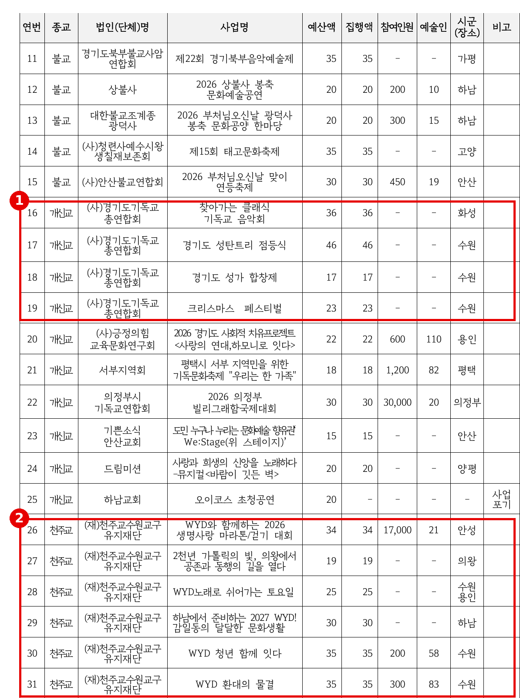
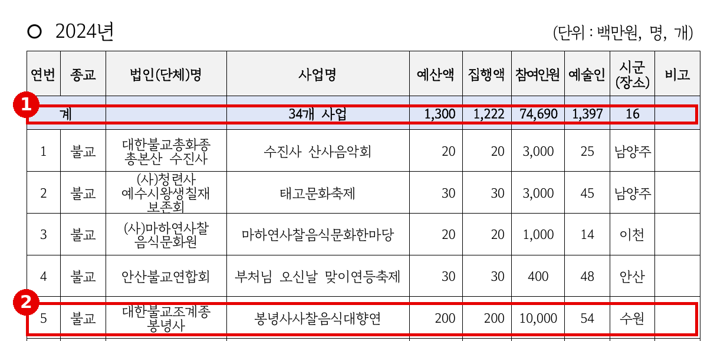

2026년 행정사무감사 질의서 (발언용 · 5분)
예술인 없는 "문화예술" 보조금
— 종교계 문화예술 프로그램 3년 34억 9천만 원, 무엇을 지원했습니까
문화체육관광위원회 황은화 위원 → 문화체육관광국장(종교협력과)
| ① 예술 없는 "문화예술" | 2024·2025년 예술인 "-"인 사업 10건, 3억 2,900만 원 — 성탄트리 점등식(각 5천만 원)·김치나눔·마라톤 → 보조 목적과 다른 행사에 "문화예술" 보조금이 나갔다 |
| ② 비어 있는 실적 | 2026년 지원 35건 중 20건이 참여인원·예술인 모두 "-"인데 5억 4,100만 원 집행(55.8%) → 실적을 확인하기 전에 돈부터 나갔다 |
| ③ 반복 수혜 | 한 법인 3년 20건 6억 5,400만 원, 다른 법인 12건 3억 9,200만 원, 단일 사업 2억 원(2024) → 누가 어떤 기준으로 받는지 보이지 않는다 |
■ 발언 — 도입
국장님, 종교계 문화예술 프로그램 보조금에 대해 묻겠습니다.
이 사업은 이름 그대로 종교계의 문화예술 프로그램을 지원하는 보조금입니다. 최근 3년간 103건, 34억 9천만 원이 나갔습니다. 2024년 12억 2,200만 원, 2025년 12억 9,900만 원, 올해는 10월까지 9억 7천만 원입니다.
먼저 분명히 해 두겠습니다. 오늘 질의는 특정 종교를 문제 삼는 것이 아닙니다. 아래 문제는 불교·개신교·천주교·원불교·유교 사업에 고르게 나타납니다. 이 보조금이 사업 이름대로 문화예술에 쓰였는지, 실적을 확인했는지, 누구에게 어떤 기준으로 돌아갔는지, 세 가지를 확인하겠습니다.
[근거] 발간본 2권 45번 428쪽 — 3년 총괄 
※ 출처: 문화체육관광국 행정사무감사 1차 요구자료(발간본 2권) 45번 「종교계 문화예술 프로그램 3년간 운영 현황」(종교협력과, 김승기·안시현·채명신·황은화 의원 요구) 428쪽 (원문 재현) |
▶ 질문 1 — 예술인이 없는 "문화예술" 프로그램
도가 제출한 자료에는 사업마다 "예술인" 칸이 있습니다. 그런데 이 칸이 "-"인 사업이 2024년과 2025년에만 10건, 3억 2,900만 원입니다. 성탄트리 점등식은 2024년과 2025년 각 5천만 원, 올해도 4,600만 원입니다. 2025년 실적은 참여 500명, 예술인 "-"입니다. 김치나눔 행사는 2024년 3천만 원, 2025년 3,800만 원으로, 두 해 모두 예술인 "-"입니다. 2024년 생명사랑 마라톤·걷기대회 3천만 원도 예술인 "-"입니다.
점등식, 김장 나눔, 마라톤이 뜻없는 행사라는 말이 아닙니다. 다만 이 돈은 "문화예술 프로그램" 보조금입니다. 「지방자치단체 보조금 관리에 관한 법률」 제13조는 지방보조금을 교부 결정의 내용과 다른 용도에 쓰지 못하게 합니다. 이 10건은 어떤 문화예술 프로그램으로 심사를 통과했습니까? 공모 요강에 "문화예술" 요건이나 지원 제외 대상이 정해져 있습니까?
▷ "점등식이나 나눔 행사에도 공연이 들어 있습니다."
→ 그렇다면 예술인 칸은 왜 비어 있습니까? 정산보고서에 출연 예술인과 공연 내역이 있다면 2025년 성탄트리 점등식 정산보고서를 제출해 주십시오.
▷ "종교계 행사는 특성상 문화예술과 나누기 어렵습니다."
→ 나누기 어렵다면 그래서 기준이 필요합니다. 같은 자료에는 예술인 500명이 참여한 성가 합창제, 510명이 참여한 종교인 평화 합창제도 있습니다. 기준은 만들 수 있습니다.
[근거] 45번 433쪽 — 2024년, 예술인 "-"인 사업 
※ 출처: 발간본 2권 45번 433쪽 2024년 표 (원문 재현, 발췌) |
[근거] 45번 431쪽 — 2025년, 예술인 "-"인 사업 
※ 출처: 발간본 2권 45번 431쪽 2025년 표 (원문 재현, 발췌) |
[근거] 「지방자치단체 보조금 관리에 관한 법률」
※ 출처: 「지방자치단체 보조금 관리에 관한 법률」(시행 2026.10.20.) 제13조, 제17조제1항 (발췌) |
▶ 질문 2 — 칸은 비어 있는데, 돈은 이미 나갔습니다
올해 자료는 더 심각합니다. 10월 12일 기준 지원한 35건 중 20건이 참여인원과 예술인 칸이 모두 "-"입니다. 그런데 이 20건에 이미 5억 4,100만 원, 올해 집행액 9억 7천만 원의 55.8%가 나갔습니다. 금강위크 3,500만 원, 경기북부음악예술제 3,500만 원, 태고문화축제 3,500만 원, 성탄을 앞둔 성탄트리 점등식 4,600만 원도 모두 집행이 끝났습니다.
아직 열리지 않은 행사라면 행사 전에 보조금을 다 내준 것이고, 이미 끝난 행사라면 실적을 받지 않은 것입니다. 「지방보조금법」 제17조는 사업이 끝나면 실적보고서와 정산보고서를 내도록 하고 있습니다. 20건 중 행사가 끝난 사업은 몇 건이고, 그중 실적보고서를 받은 사업은 몇 건입니까? 실적을 받기 전에 전액을 교부한 근거는 무엇입니까?
▷ "보조금은 사업 전에 교부하고 사업이 끝나면 정산합니다."
→ 그렇다면 작년 정산에서는 무엇을 확인했습니까? 작년 성탄트리 점등식도 예술인 칸은 "-"였습니다. 2025년 사업별 정산 검토서를 제출해 주십시오.
▷ "행감 자료를 만들 때 실적이 아직 집계되지 않았을 뿐입니다."
→ 행사가 끝난 사업까지 비어 있다면, 도가 실적을 받지 않은 것입니다. 사업별 행사일과 실적보고서 제출일을 표로 제출해 주십시오.
[근거] 45번 428쪽 — 2026년, 실적 "-"인데 집행 완료 ① 
※ 출처: 발간본 2권 45번 428쪽 2026년 표 (원문 재현, 발췌) |
[근거] 45번 429·430쪽 — 2026년, 실적 "-"인데 집행 완료 ② 
※ 출처: 발간본 2권 45번 429쪽 2026년 표 (원문 재현, 발췌). 430쪽 34~37번은 아래 별도 캡처 |
[근거] 45번 430쪽 — 2026년, 실적 "-"인데 집행 완료 ③ 
※ 출처: 발간본 2권 45번 430쪽 2026년 표 (원문 재현, 발췌) |
▶ 질문 3 — 같은 법인이 해마다 여러 건, 기준은 무엇입니까
같은 법인이 해마다 여러 건을 받습니다. 한 천주교 교구 유지재단은 3년 동안 20건, 6억 5,400만 원을 받았습니다. 3년 전체 집행액의 18.7%입니다. 한 개신교 연합 법인은 해마다 4건씩, 성가 합창제·성탄트리 점등식·크리스마스 페스티벌·음악회로 12건, 3억 9,200만 원을 받았습니다. 올해도 두 법인이 각각 6건과 4건입니다.
2024년에는 한 사찰의 사찰음식 행사 한 건에 2억 원이 나갔습니다. 그해 나머지 33건은 모두 5천만 원 이하입니다. 이 한 건이 그해 집행액의 16.4%입니다. 여러 번 받는 것 자체가 잘못은 아닙니다. 그러나 해마다 같은 단체가 여러 건을 받는다면, 공모가 아니라 나눠 주기가 아닌지 물을 수밖에 없습니다. 사업 선정은 누가, 어떤 심사표로 합니까? 한 법인의 연간 지원 건수나 금액에 상한이 있습니까? 2024년 2억 원은 어떤 기준으로 정했습니까?
▷ "종교 간 형평을 고려해 배분하고 있습니다."
→ 형평이 기준이라면 종교별 배분 기준부터 공개해야 합니다. 그리고 같은 종교 안에서도 한 법인이 3년간 20건을 받았습니다. 그것도 형평입니까?
▷ "공모 심사위원회를 거쳐 선정합니다."
→ 그렇다면 심사표와 심사위원 구성을 제출해 주십시오. 예술인이 없는 사업이 어떤 점수로 통과했는지 확인하겠습니다.
[근거] 45번 429쪽 — 2026년에도 같은 법인이 여러 건 
※ 출처: 발간본 2권 45번 429·431·433쪽 (원문 재현, 발췌). 누계는 3년 표를 의원실이 집계 |
[근거] 45번 432쪽 — 2024년 단일 사업 2억 원 
※ 출처: 발간본 2권 45번 432쪽 2024년 표 (원문 재현, 발췌). 비율은 의원실 산출 |
■ 마무리 · 요구사항
점등식도, 김장 나눔도, 마라톤도 모두 좋은 일입니다. 하지만 "문화예술 프로그램"이라는 이름으로 나간 보조금이라면, 무대에 선 예술인과 그 무대를 본 도민으로 증명해야 합니다. 이 사업이 종교계와 도민을 잇는 문화의 통로가 되려면, 기준과 실적부터 꼼꼼히 챙겨야 합니다.
하나, 공모 요강에 "문화예술 프로그램" 인정 기준(공연·전시 등 예술 활동과 예술인 참여)과 지원 제외 대상을 명시하고, 법인별 연간 지원 상한을 정해 2027년 공모 공고 전 상임위원회에 보고해 주십시오.
둘, 2026년 지원 35건의 행사일·실적보고서 제출일·참여인원·출연 예술인을 정리해 2026년 12월까지 제출하고, 실적을 확인할 수 없는 사업은 정산 때 환수 여부를 검토해 주십시오.
셋, 2024~2026년 법인별 지원 누계와 공모 심사표·심사위원 구성을 2027년도 예산안 의결 전에 제출해 주십시오.